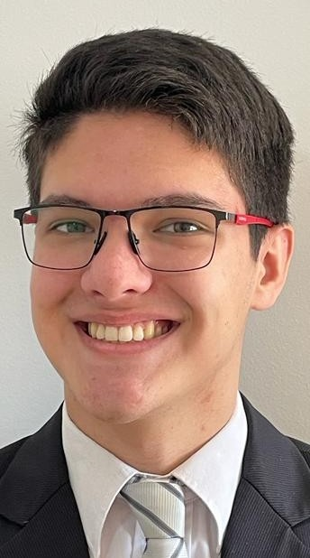

Santiago Benjamín Irigoyen | WDD 130
I'm Santiago Benjamín Irigoyen from [Argentina, Misiones, Posadas] and a new student of BYU idaho. I was born in [Argentina - Buenos Aires] and graduated from high school at Luis Siguel, a private German evangelical school in Argentina.
I took an English exam from the University of Cambridge and achieved an English level of B2 (almost C1 by two points). I also went to Brazil for my mission where I had to learn Portuguese, therefore I have experience with German, Portuguese and advanced English.
So i have a lot of experience with language, i also traveled to the [United States - Utah] to see the temple in Salt Lake Temple, i had a chance to behold the São Paulo Brazil Temple in my CTM when i went to my mission in Brasil and i always used to travel to Buenos Aires Argentina Temple.
I'm doing theatre as a hobby and i like reading and writing stuff [through i'm not really good at it]
My favorite phrase is "If I find in myself a desire that no experience in this world can satisfy, the most likely explanation is that I was created for another world."
|C.S. Lewis|